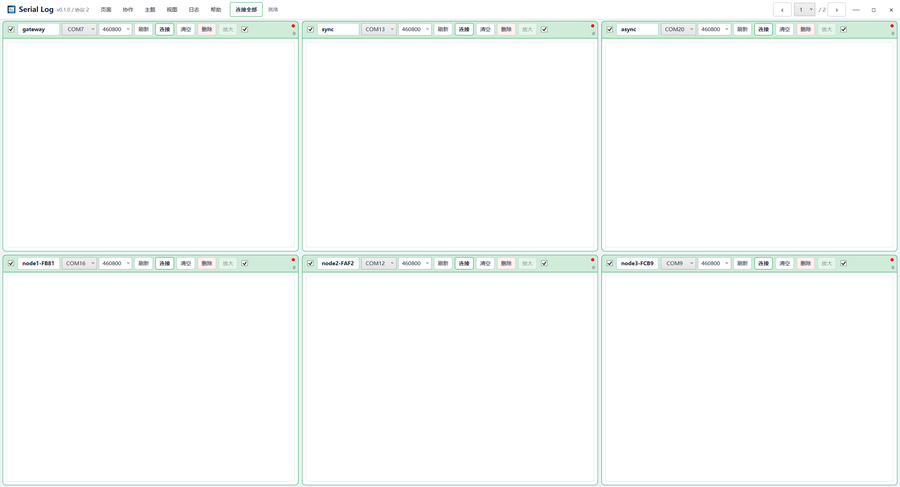
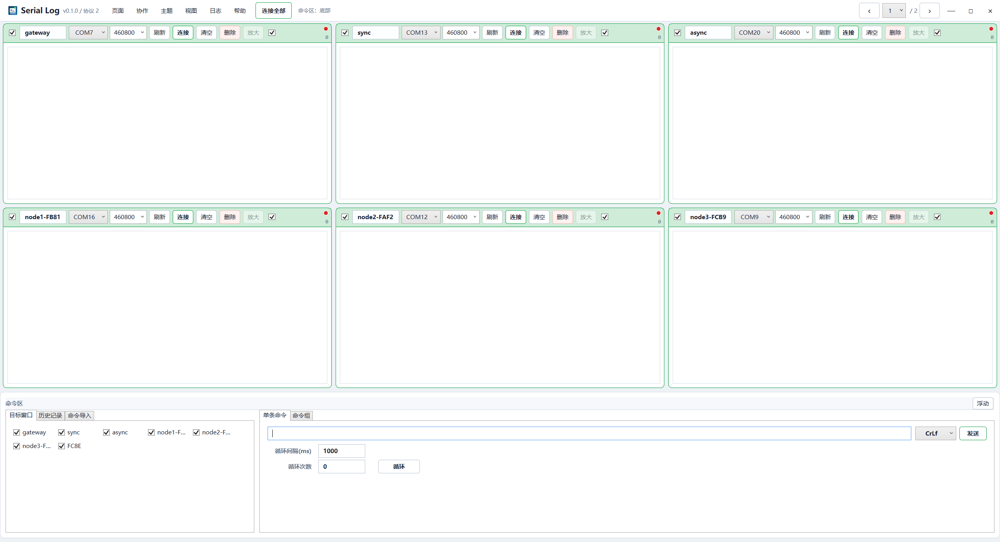

Serial Log 操作说明
面向多串口调试、日志比对和多电脑协作的 Windows 工具。

快速开始
- 启动
SerialLog.App.exe。 - 在串口窗口选择端口和波特率，点击“连接”。
- 需要同时连接多个端口时，使用标题栏“连接全部”；再次执行会断开所有已连接窗口。
- 日志默认写入标题栏“日志”菜单中设置的目录。
标题栏菜单
Serial Log 将常用设置收纳到自定义标题栏，为日志区保留更多垂直空间。标题栏左侧显示应用版本和协作协议版本，操作结果显示在“连接全部”右侧；最右侧常驻上一页、页码跳转和下一页控件。
| 菜单 | 主要功能 |
|---|---|
| 页面 | 新增页、删除空白页、循环翻页和直接跳转。 |
| 协作 | 设置本地、主机或从机模式，以及名称、地址、端口和启动状态。 |
| 主题 | 选择预设颜色或打开 Windows 调色板自定义主题色。 |
| 视图 | 设置命令区上、下、左、右停靠，浮动或显示/隐藏。 |
| 日志 | 设置日志根目录、浏览目录、新建日志会话，并打开当前会话目录。 |
| 帮助 | 打开操作说明、配置快捷键、查看版本号。 |
打开任一菜单后，将鼠标横向移动到其他菜单可直接切换；点击外部或按 Esc 关闭菜单。
串口窗口
每个窗口独立保存名称、端口、波特率、连接状态和日志。窗口菜单栏支持刷新端口、连接或断开、清空、删除和放大；常用波特率可直接选择，也可输入自定义值。
- 点击空白区域中的“+”可在对应位置新建串口窗口。
- 拖动窗口空白标题区域可调整窗口顺序。
- 左侧复选框控制是否作为命令发送目标，右侧复选框控制本地窗口日志自动保存。
- 远端协作窗口在从机侧只读，不可用操作会自动置灰；主机仍可向从机窗口发送命令。
- 删除窗口前会弹出确认，已写入的日志文件不会被删除。
日志查看与保存
界面时间戳显示时分秒和毫秒，保存文件包含完整日期时间。带 ANSI 颜色标识的日志会在界面中解析显示，写入文件时会去除控制字符。
- 滚动鼠标滚轮可暂停自动跟随。
- 按 Enter 跳到最新日志并恢复跟随。
- Ctrl + A 全选，Ctrl + C 复制选中日志。
- 右键日志可复制当前行。
- 每个窗口界面最多保留 5000 行，旧行会从界面移除，但磁盘日志完整保存。
- 单个日志文件达到 100 MB 后自动分段，新文件通过序号区分。
- 点击“清空”只清除界面缓存，并恢复自动跟随，不删除磁盘文件。
日志会话
一次运行会话共用一个目录。标题栏“日志 → 新建会话”会立即创建新目录，已连接窗口后续内容也写入新会话；“日志 → 当前会话日志”可直接在文件资源管理器中打开当前会话目录。
页面管理
每页最多显示六个窗口。页面菜单支持新增、删除空白页、上一页、下一页和直接跳转；上一页与下一页采用循环切换。标题栏右侧常驻分页控件，也可使用方向键或自定义快捷键翻页。
命令区

命令区支持单条发送、循环发送、历史记录、AT 命令集和命令组。可停靠在上、下、左、右，也可隐藏以获得更大的纯日志视图。
- 单条命令可选择换行方式和目标窗口。
- 命令组可配置组内间隔、循环间隔和循环次数。
- 从机看到的远端窗口不会加入可发送目标。
多机协作
协作协议 2 采用主机中继模式，不建立从机间直连。主机汇总自身及各从机的窗口快照和实时日志，再转发给其他从机。
- 主机在“协作”中选择“主机”，确认端口后启动主机。
- 从机选择“从机”，填写主机 IPv4 地址和相同端口后连接。
- 所有电脑需使用相同的协作协议版本。
主题与视图
“主题”菜单可选择预设主题色或打开 Windows 调色板自定义颜色。窗口边框、菜单高亮和滚动条会跟随主题色。
“视图”菜单用于设置命令区停靠方向或显示状态。窗口缩放时，菜单、控件和布局按比例变化，并设有最小缩放限制；日志文字保持原字号，避免缩小后难以阅读。
快捷键
在“帮助 → 快捷键”中可以修改、清除或恢复默认值。应用会在保存前检查内部冲突。
| 功能 | 默认快捷键 |
|---|---|
| 打开操作说明 | F1 |
| 新增页面 | Ctrl + N |
| 删除当前页 | Alt + Delete |
| 上一页 / 下一页 | Left / Right |
| 新增串口窗口 | Alt + P |
| 连接 / 断开全部 | Alt + L |
| 连接 / 断开当前窗口 | Ctrl + L |
| 暂停 / 恢复当前窗口日志跟随 | Ctrl + S |
| 暂停 / 恢复全部窗口日志跟随 | Alt + S |
| 清空当前窗口日志 | Ctrl + K |
| 清空全部窗口日志 | Alt + K |
| 显示 / 隐藏命令区 | Ctrl + M |
| 新建日志会话 | Alt + N |
| 浏览日志目录 | Alt + O |
| 启动 / 停止协作 | Alt + I |
常见问题
串口没有输出
检查端口是否正确、设备是否被占用、设备是否正在输出，以及波特率是否匹配。
日志出现乱码
先用设备规定的波特率验证。若同一设备在其他工具中正常，再保留原始日志文件并提交问题。
滚动日志时无法查看旧内容
向上滚动会暂停跟随；按 Enter 恢复。如果仍自动跳动，确认鼠标指针位于对应日志窗口内。
协作窗口不可操作
从机侧远端窗口设计为只读。需要控制从机串口时，请在主机端执行。